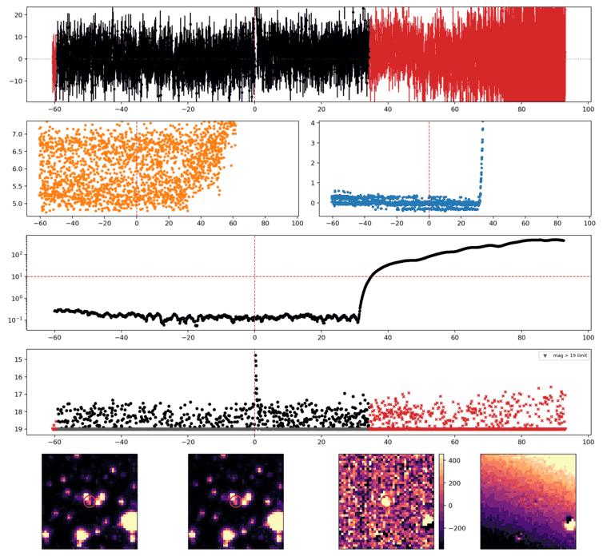
Search centered on refined position (157.4038131, -12.4466984 deg). Gaia coordinates are at J2016.0; proper motions are shown, without epoch propagation. A positional match does not change the candidate flags.
| Source ID / catalog entry | Separation (arcsec) | RA (deg) | Dec (deg) | G (mag) | BP (mag) | RP (mag) | Parallax ± error (mas) | PM RA* ± error (mas/yr) | PM Dec ± error (mas/yr) | RUWE | Variability |
|---|---|---|---|---|---|---|---|---|---|---|---|
| 3754284415841995392 | 0.953 | 157.4035449 | -12.4466591 | 15.463 | 17.087 | 14.236 | 13.743 ± 0.125 | 78.770 ± 0.173 | -71.698 ± 0.116 | 3.117 | NOT_AVAILABLE |
Retrieved 2026-10-08T07:57:21.435746+00:00
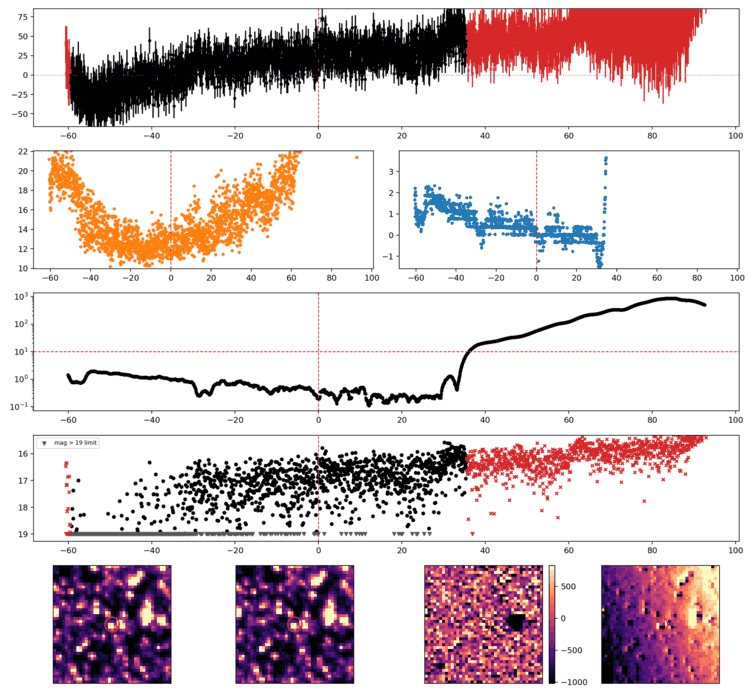
Search centered on refined position (176.9537882, -61.8815870 deg). Gaia coordinates are at J2016.0; proper motions are shown, without epoch propagation. A positional match does not change the candidate flags.
| Source ID / catalog entry | Separation (arcsec) | RA (deg) | Dec (deg) | G (mag) | BP (mag) | RP (mag) | Parallax ± error (mas) | PM RA* ± error (mas/yr) | PM Dec ± error (mas/yr) | RUWE | Variability |
|---|---|---|---|---|---|---|---|---|---|---|---|
| 5334857222886496256 | 1.998 | 176.9537054 | -61.8810335 | 19.463 | 19.929 | 18.502 | 0.293 ± 0.256 | -11.359 ± 0.271 | 2.652 ± 0.244 | 0.961 | NOT_AVAILABLE |
| 5334857222886496384 | 2.236 | 176.9528572 | -61.8811475 | 19.834 | — | — | 0.255 ± 0.368 | -7.207 ± 0.385 | 1.982 ± 0.349 | 1.059 | NOT_AVAILABLE |
| 5334857222889009920 | 3.365 | 176.9537269 | -61.8825214 | 20.873 | — | — | — | — | — | — | NOT_AVAILABLE |
| 5334857222888629120 | 3.433 | 176.9551740 | -61.8822818 | 20.749 | 21.618 | 19.836 | -0.782 ± 1.071 | -7.297 ± 1.706 | 0.129 ± 1.111 | 0.966 | NOT_AVAILABLE |
| 5334857222886489216 | 3.521 | 176.9522553 | -61.8822462 | 19.421 | 19.681 | 18.437 | 0.598 ± 0.267 | -5.927 ± 0.278 | 2.210 ± 0.241 | 1.052 | NOT_AVAILABLE |
Retrieved 2026-10-08T07:57:29.418806+00:00
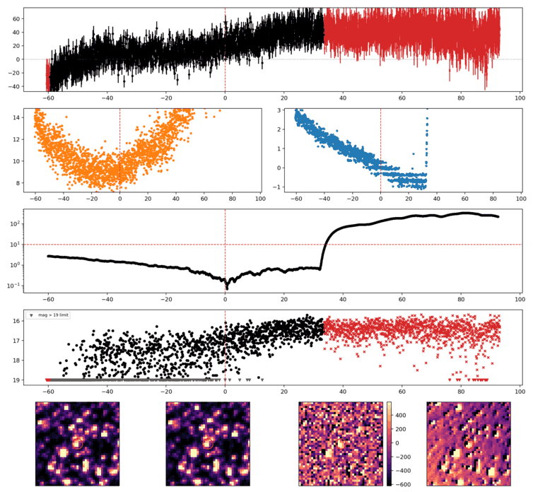
Search centered on refined position (196.8991825, -70.0722499 deg). Gaia coordinates are at J2016.0; proper motions are shown, without epoch propagation. A positional match does not change the candidate flags.
| Source ID / catalog entry | Separation (arcsec) | RA (deg) | Dec (deg) | G (mag) | BP (mag) | RP (mag) | Parallax ± error (mas) | PM RA* ± error (mas/yr) | PM Dec ± error (mas/yr) | RUWE | Variability |
|---|---|---|---|---|---|---|---|---|---|---|---|
| 5844688017228900736 | 0.542 | 196.8996238 | -70.0722566 | 18.501 | 18.975 | 17.700 | 0.227 ± 0.129 | -7.566 ± 0.155 | -0.762 ± 0.161 | 0.980 | NOT_AVAILABLE |
| 5844688017202171904 | 4.269 | 196.8965887 | -70.0730401 | 19.887 | 19.011 | 17.692 | 1.174 ± 0.545 | -7.041 ± 0.459 | -0.069 ± 0.593 | 1.088 | NOT_AVAILABLE |
Retrieved 2026-10-08T07:57:38.840250+00:00
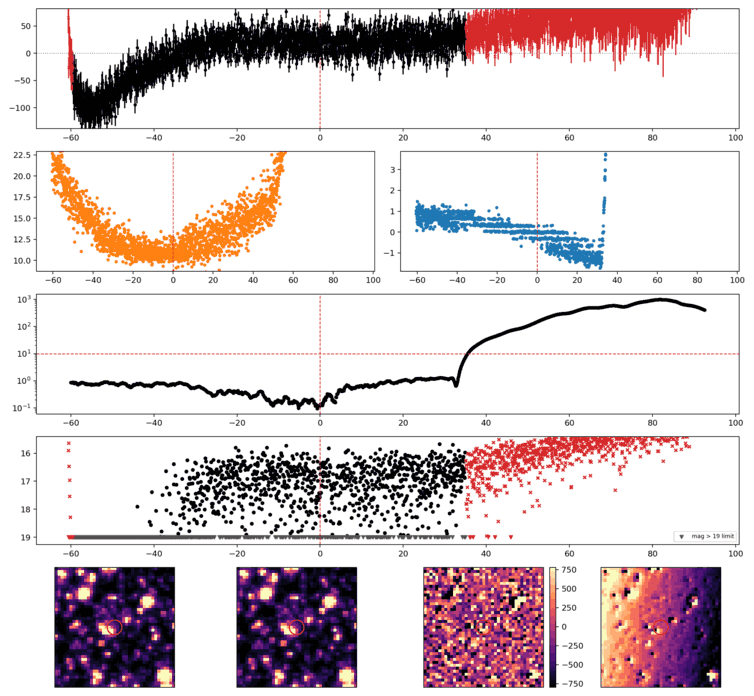
Search centered on refined position (184.6324467, -66.9944368 deg). Gaia coordinates are at J2016.0; proper motions are shown, without epoch propagation. A positional match does not change the candidate flags.
| Source ID / catalog entry | Separation (arcsec) | RA (deg) | Dec (deg) | G (mag) | BP (mag) | RP (mag) | Parallax ± error (mas) | PM RA* ± error (mas/yr) | PM Dec ± error (mas/yr) | RUWE | Variability |
|---|---|---|---|---|---|---|---|---|---|---|---|
| 5859716073438478848 | 4.851 | 184.6354531 | -66.9950968 | 18.529 | 19.083 | 17.844 | 0.203 ± 0.163 | -6.942 ± 0.170 | 0.930 ± 0.232 | 1.074 | NOT_AVAILABLE |
Retrieved 2026-10-08T07:57:45.778088+00:00
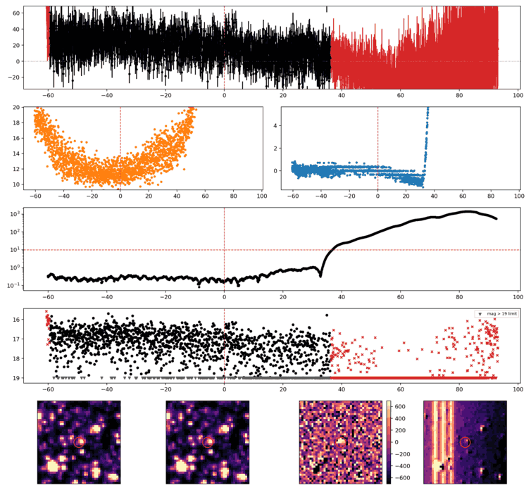
Search centered on refined position (175.5680140, -64.8762012 deg). Gaia coordinates are at J2016.0; proper motions are shown, without epoch propagation. A positional match does not change the candidate flags.
| Source ID / catalog entry | Separation (arcsec) | RA (deg) | Dec (deg) | G (mag) | BP (mag) | RP (mag) | Parallax ± error (mas) | PM RA* ± error (mas/yr) | PM Dec ± error (mas/yr) | RUWE | Variability |
|---|---|---|---|---|---|---|---|---|---|---|---|
| 5332629681047947264 | 1.727 | 175.5689999 | -64.8759667 | 21.029 | 22.573 | 20.294 | — | — | — | — | NOT_AVAILABLE |
Retrieved 2026-10-08T07:57:51.158824+00:00
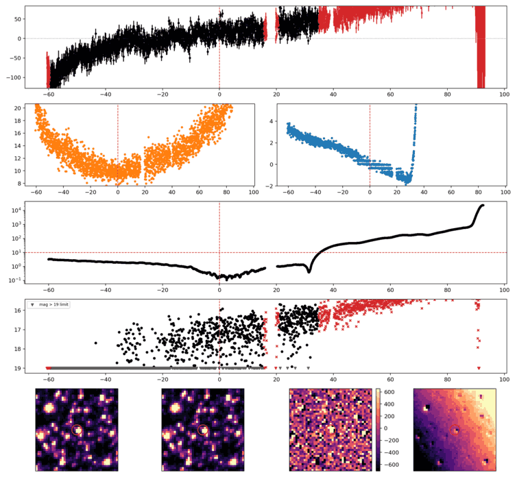
Search centered on refined position (234.7203945, -65.3421280 deg). Gaia coordinates are at J2016.0; proper motions are shown, without epoch propagation. A positional match does not change the candidate flags.
| Source ID / catalog entry | Separation (arcsec) | RA (deg) | Dec (deg) | G (mag) | BP (mag) | RP (mag) | Parallax ± error (mas) | PM RA* ± error (mas/yr) | PM Dec ± error (mas/yr) | RUWE | Variability |
|---|---|---|---|---|---|---|---|---|---|---|---|
| 5825698523675865216 | 3.283 | 234.7224576 | -65.3424296 | 20.204 | 20.212 | 18.380 | 1.876 ± 0.525 | -18.982 ± 0.234 | -15.162 ± 0.501 | 0.998 | NOT_AVAILABLE |
| 5825698523675040256 | 3.424 | 234.7213013 | -65.3430006 | 18.332 | 18.659 | 17.546 | -0.090 ± 0.141 | -3.005 ± 0.065 | -4.139 ± 0.135 | 1.088 | NOT_AVAILABLE |
| 5825698523675048832 | 3.738 | 234.7185214 | -65.3414443 | 18.902 | 19.287 | 18.198 | 0.363 ± 0.188 | -5.906 ± 0.092 | -4.273 ± 0.168 | 1.047 | NOT_AVAILABLE |
| 5825698519383490560 | 4.076 | 234.7229376 | -65.3417329 | 19.116 | 19.429 | 18.479 | -0.109 ± 0.242 | -5.102 ± 0.098 | -3.834 ± 0.207 | 1.088 | NOT_AVAILABLE |
| 5825698523710270336 | 4.732 | 234.7174549 | -65.3426010 | 20.165 | 20.527 | 19.044 | 0.762 ± 0.482 | -6.077 ± 0.237 | -5.912 ± 0.467 | 1.001 | NOT_AVAILABLE |
Retrieved 2026-10-08T07:58:09.032684+00:00
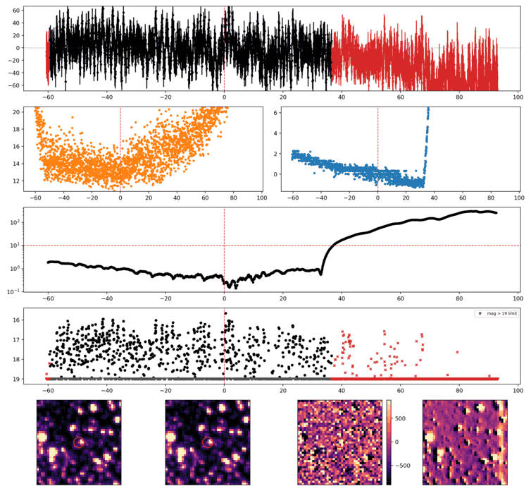
Search centered on refined position (213.2363659, -63.4310717 deg). Gaia coordinates are at J2016.0; proper motions are shown, without epoch propagation. A positional match does not change the candidate flags.
| Source ID / catalog entry | Separation (arcsec) | RA (deg) | Dec (deg) | G (mag) | BP (mag) | RP (mag) | Parallax ± error (mas) | PM RA* ± error (mas/yr) | PM Dec ± error (mas/yr) | RUWE | Variability |
|---|---|---|---|---|---|---|---|---|---|---|---|
| 5853779466604961408 | 1.515 | 213.2371691 | -63.4312910 | 19.272 | 20.128 | 18.315 | 0.389 ± 0.268 | -5.502 ± 0.169 | -2.838 ± 0.255 | 1.038 | NOT_AVAILABLE |
| 5853779466537332480 | 4.212 | 213.2381441 | -63.4302137 | 20.934 | 21.808 | 19.043 | — | — | — | — | NOT_AVAILABLE |
| 5853779260377472512 | 4.644 | 213.2382649 | -63.4320425 | 20.220 | 19.393 | 17.955 | -1.443 ± 0.935 | -10.430 ± 0.608 | -4.694 ± 0.763 | 1.538 | NOT_AVAILABLE |
Retrieved 2026-10-08T07:58:18.809811+00:00
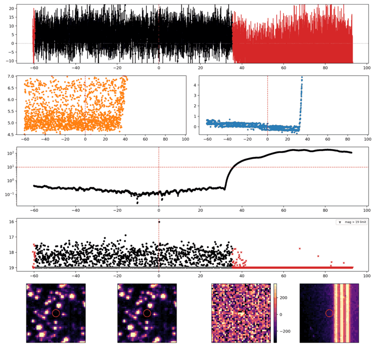
Search centered on refined position (168.9338064, -15.2326579 deg). Gaia coordinates are at J2016.0; proper motions are shown, without epoch propagation. A positional match does not change the candidate flags.
No Gaia DR3 sources found within 5 arcseconds.
Retrieved 2026-10-08T07:58:24.810797+00:00
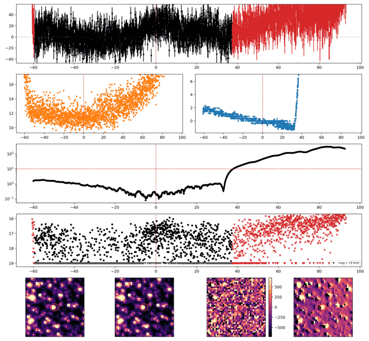
Search centered on refined position (211.2228703, -59.2064837 deg). Gaia coordinates are at J2016.0; proper motions are shown, without epoch propagation. A positional match does not change the candidate flags.
| Source ID / catalog entry | Separation (arcsec) | RA (deg) | Dec (deg) | G (mag) | BP (mag) | RP (mag) | Parallax ± error (mas) | PM RA* ± error (mas/yr) | PM Dec ± error (mas/yr) | RUWE | Variability |
|---|---|---|---|---|---|---|---|---|---|---|---|
| 5867925130347488896 | 2.151 | 211.2229669 | -59.2058881 | 19.909 | 20.923 | 18.911 | 0.107 ± 0.421 | -4.069 ± 0.397 | -2.707 ± 0.531 | 0.977 | NOT_AVAILABLE |
| 5867925130302819456 | 2.584 | 211.2225148 | -59.2071779 | 18.826 | 18.960 | 17.304 | -0.149 ± 0.281 | -6.339 ± 0.241 | -2.121 ± 0.320 | 1.159 | NOT_AVAILABLE |
Retrieved 2026-10-08T07:58:32.757111+00:00
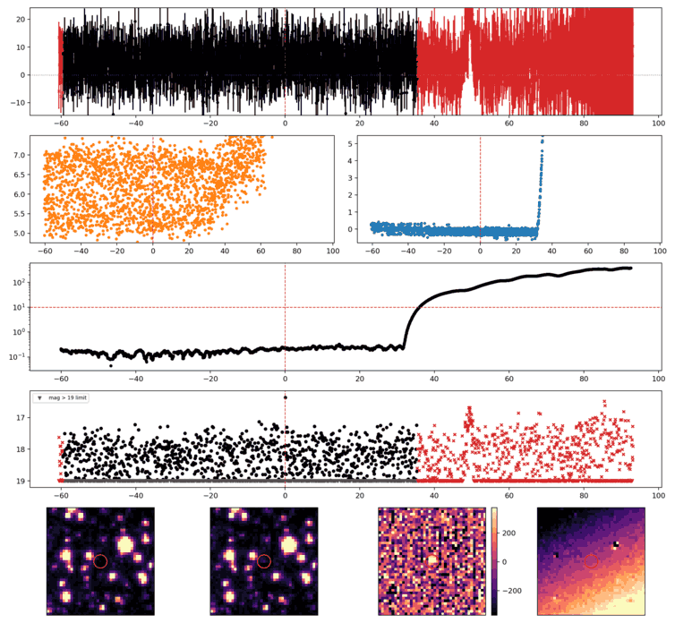
Search centered on refined position (159.9763444, -14.3806900 deg). Gaia coordinates are at J2016.0; proper motions are shown, without epoch propagation. A positional match does not change the candidate flags.
No Gaia DR3 sources found within 5 arcseconds.
Retrieved 2026-10-08T07:58:37.583838+00:00
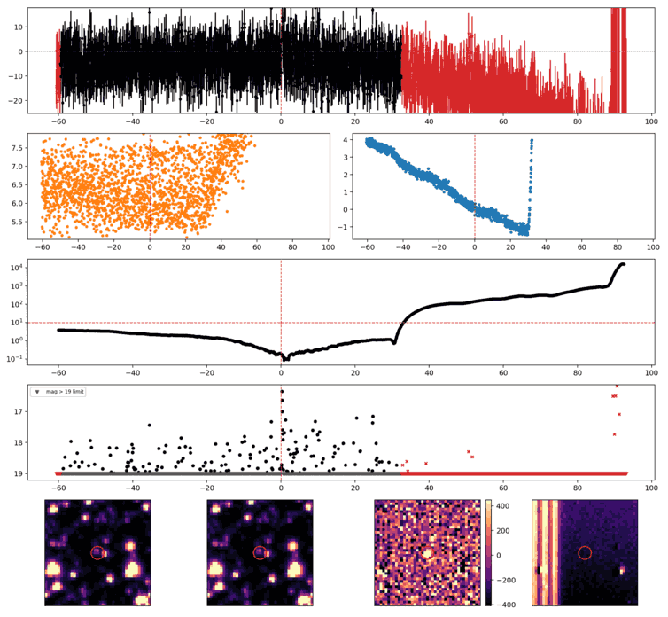
Search centered on refined position (291.0514244, -76.2283873 deg). Gaia coordinates are at J2016.0; proper motions are shown, without epoch propagation. A positional match does not change the candidate flags.
| Source ID / catalog entry | Separation (arcsec) | RA (deg) | Dec (deg) | G (mag) | BP (mag) | RP (mag) | Parallax ± error (mas) | PM RA* ± error (mas/yr) | PM Dec ± error (mas/yr) | RUWE | Variability |
|---|---|---|---|---|---|---|---|---|---|---|---|
| 6366997065920784896 | 4.912 | 291.0540572 | -76.2295994 | 17.212 | 19.465 | 15.830 | 7.202 ± 0.073 | 16.123 ± 0.060 | -14.081 ± 0.075 | 1.088 | VARIABLE |
Retrieved 2026-10-08T07:58:42.457274+00:00
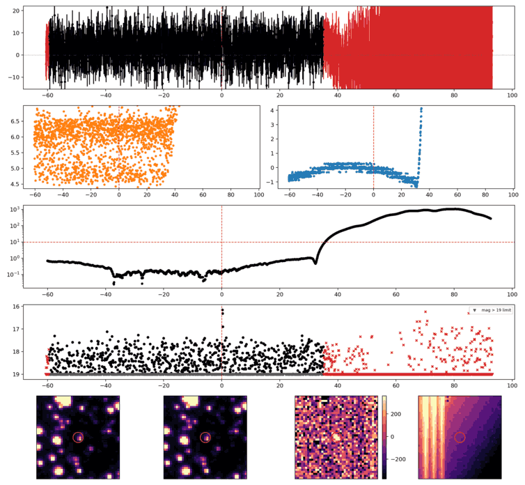
Search centered on refined position (151.5628472, -16.9183619 deg). Gaia coordinates are at J2016.0; proper motions are shown, without epoch propagation. A positional match does not change the candidate flags.
| Source ID / catalog entry | Separation (arcsec) | RA (deg) | Dec (deg) | G (mag) | BP (mag) | RP (mag) | Parallax ± error (mas) | PM RA* ± error (mas/yr) | PM Dec ± error (mas/yr) | RUWE | Variability |
|---|---|---|---|---|---|---|---|---|---|---|---|
| 5673612116814177152 | 2.547 | 151.5623398 | -16.9178473 | 14.742 | 15.933 | 13.649 | 6.284 ± 0.120 | -37.505 ± 0.126 | -0.018 ± 0.113 | 4.547 | NOT_AVAILABLE |
Retrieved 2026-10-08T07:58:47.668575+00:00
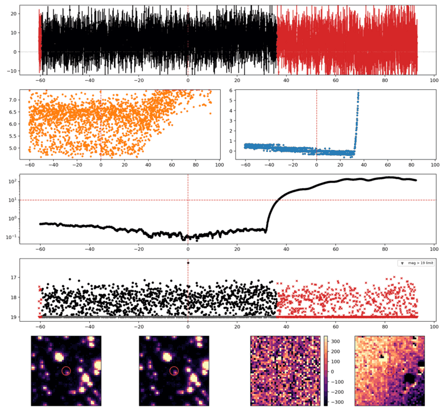
Search centered on refined position (169.7619359, -23.3205926 deg). Gaia coordinates are at J2016.0; proper motions are shown, without epoch propagation. A positional match does not change the candidate flags.
No Gaia DR3 sources found within 5 arcseconds.
Retrieved 2026-10-08T07:58:53.064645+00:00
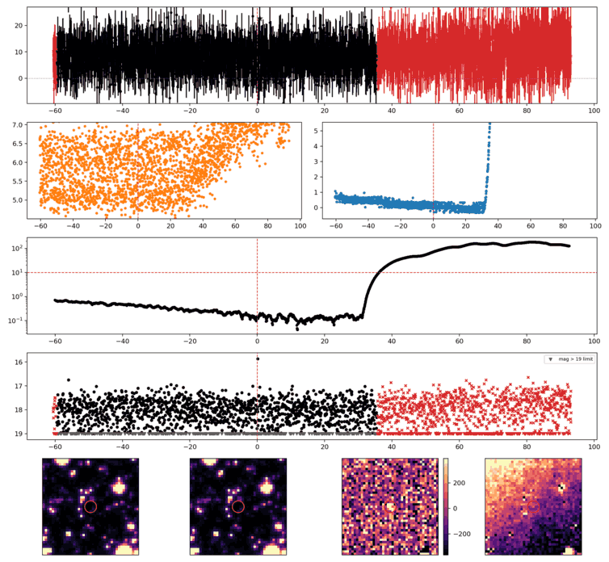
Search centered on refined position (162.4791393, -20.1189763 deg). Gaia coordinates are at J2016.0; proper motions are shown, without epoch propagation. A positional match does not change the candidate flags.
No Gaia DR3 sources found within 5 arcseconds.
Retrieved 2026-10-08T07:58:58.027549+00:00
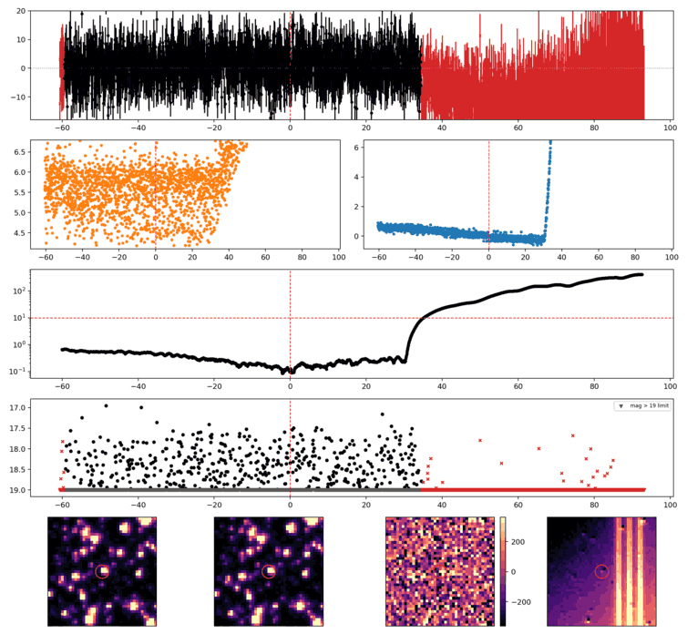
Search centered on refined position (172.1364221, -34.1606121 deg). Gaia coordinates are at J2016.0; proper motions are shown, without epoch propagation. A positional match does not change the candidate flags.
No Gaia DR3 sources found within 5 arcseconds.
Retrieved 2026-10-08T07:59:03.013187+00:00
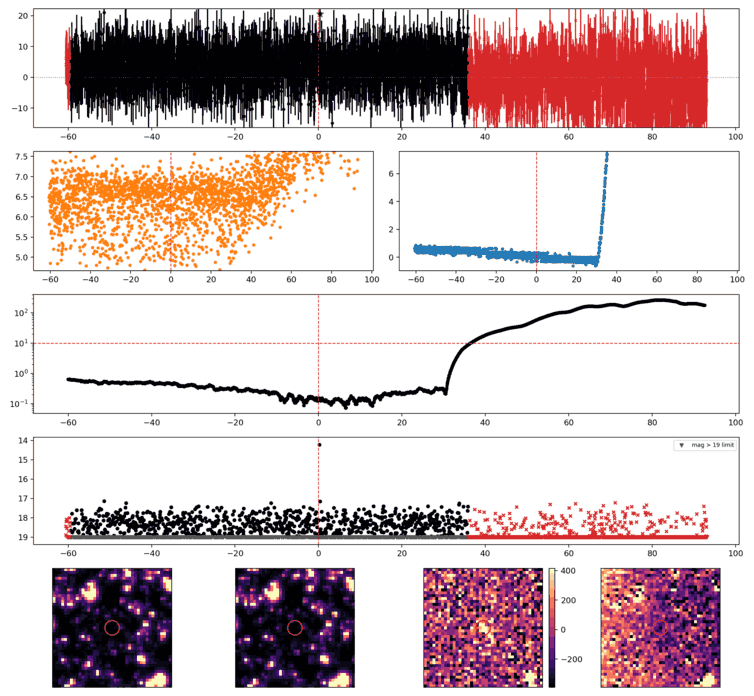
Search centered on refined position (170.0499149, -39.9010980 deg). Gaia coordinates are at J2016.0; proper motions are shown, without epoch propagation. A positional match does not change the candidate flags.
No Gaia DR3 sources found within 5 arcseconds.
Retrieved 2026-10-08T07:59:08.575015+00:00
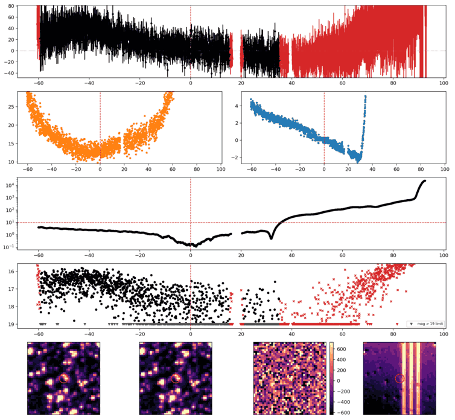
Search centered on refined position (244.1593972, -60.2051131 deg). Gaia coordinates are at J2016.0; proper motions are shown, without epoch propagation. A positional match does not change the candidate flags.
No Gaia DR3 sources found within 5 arcseconds.
Retrieved 2026-10-08T07:59:15.564583+00:00
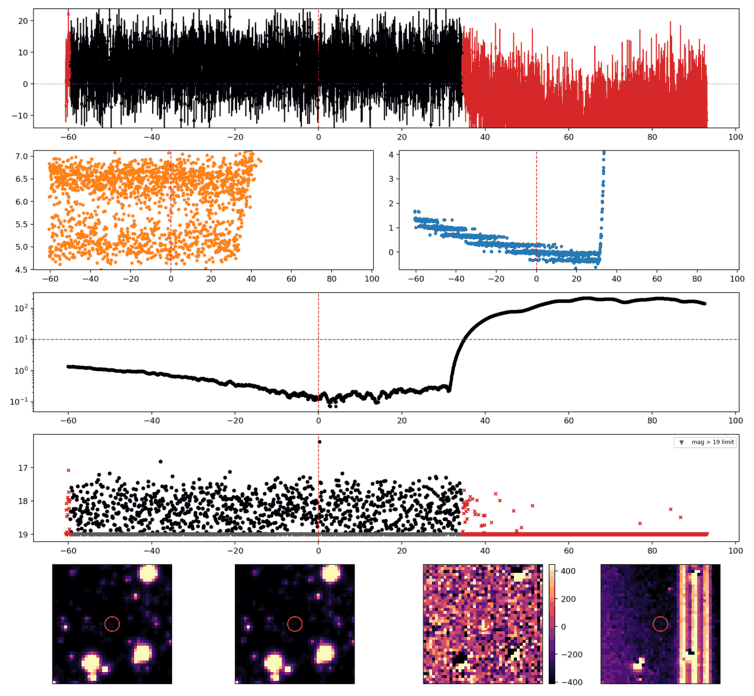
Search centered on refined position (159.3647727, -24.9784360 deg). Gaia coordinates are at J2016.0; proper motions are shown, without epoch propagation. A positional match does not change the candidate flags.
No Gaia DR3 sources found within 5 arcseconds.
Retrieved 2026-10-08T07:59:21.836829+00:00
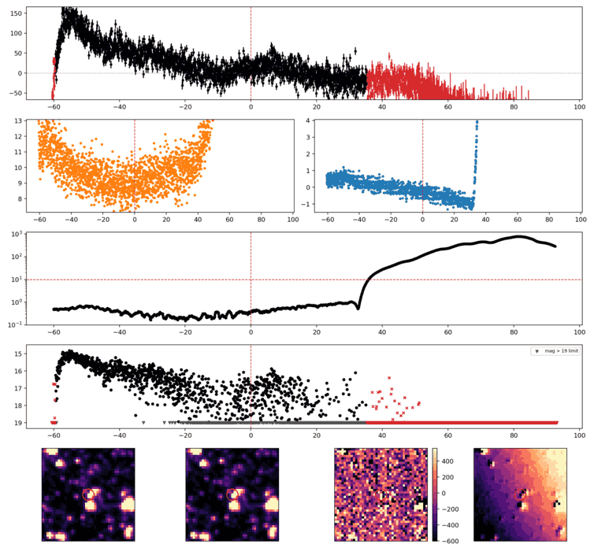
Search centered on refined position (179.2284254, -70.4822821 deg). Gaia coordinates are at J2016.0; proper motions are shown, without epoch propagation. A positional match does not change the candidate flags.
| Source ID / catalog entry | Separation (arcsec) | RA (deg) | Dec (deg) | G (mag) | BP (mag) | RP (mag) | Parallax ± error (mas) | PM RA* ± error (mas/yr) | PM Dec ± error (mas/yr) | RUWE | Variability |
|---|---|---|---|---|---|---|---|---|---|---|---|
| 5233760976995361024 | 3.167 | 179.2260562 | -70.4818983 | 16.806 | 17.291 | 16.139 | 0.217 ± 0.052 | -4.957 ± 0.059 | -0.019 ± 0.064 | 1.144 | NOT_AVAILABLE |
Retrieved 2026-10-08T07:59:31.008610+00:00